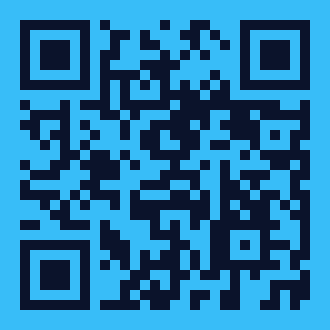

Turning Abstract Cloud Jargon into Confident Exam Readiness for Africa's Next 1 Million Developers
Real-Time Weighted Exam Modeling With Automated Weak Area Pitstops
sw.js. Works during power blackouts or airplane mode.Bridging High-Tech Cloud Concepts With Relatable Mental Models & Multilingual Context
📍 Nairobi, Kenya
📍 Lagos, Nigeria
📍 Kigali, Rwanda
Accessibility-First Engineering Meets Cost-Free Serverless Scalability
Built in 48 Hours • Deployed Globally • 100% Open Source Community Study Tool
sw.js) for offline assets & background alarms.Works offline • Instant Mobile Launch

az900-vibe-agent.vercel.app